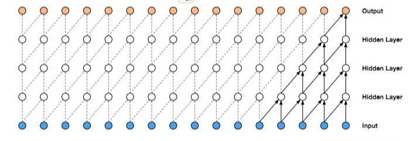

时序卷积神经网络
TCN原则：
1）输入长度和输出长度一样
2）未来到过去的信息不能被泄露
因果卷积（Causal Convolution）

因果卷积可以用上图直观表示。 即对于上一层t时刻的值，只依赖于下一层t时刻及其之前的值。和传统的卷积神经网络的不同之处在于，因果卷积不能看到未来的数据，它是单向的结构，不是双向的。也就是说只有有了前面的因才有后面的果，是一种严格的时间约束模型，因此被成为因果卷积。
TCN原则：
1）输入长度和输出长度一样（1D FCN）
2）未来到过去的信息不能被泄漏（因果卷积）
TCN = 1D FCN + causal convolutions
膨胀卷积（Dilated Convolution）

和传统卷积不同的是，膨胀卷积允许卷积时的输入存在间隔采样，采样率受图中的d控制。 最下面一层的d=1，表示输入时每个点都采样，中间层d=2，表示输入时每2个点采样一个作为输入。一般来讲，越高的层级使用的d的大小越大。所以，膨胀卷积使得有效窗口的大小随着层数呈指数型增长。这样卷积网络用比较少的层，就可以获得很大的感受野。
残差链接（Residual Connections）

残差链接被证明是训练深层网络的有效方法，它使得网络可以以跨层的方式传递信息。本文构建了一个残差块来代替一层的卷积。如上图所示，一个残差块包含两层的卷积和非线性映射，在每层中还加入了WeightNorm和Dropout来正则化网络。
TCN的接收场取决于网络深度n以及滤波器大小k和扩散因子d，因此，更深和更大的TCN的稳定化变得很重要。
TCN的优点
（1）并行性。当给定一个句子时，TCN可以将句子并行的处理，而不需要像RNN那样顺序的处理。
（2）灵活的感受野。TCN的感受野的大小受层数、卷积核大小、扩张系数等决定。可以根据不同的任务不同的特性灵活定制。
（3）稳定的梯度。RNN经常存在梯度消失和梯度爆炸的问题，这主要是由不同时间段上共用参数导致的，和传统卷积神经网络一样，TCN不太存在梯度消失和爆炸问题。
（4）内存更低。RNN在使用时需要将每步的信息都保存下来，这会占据大量的内存，TCN在一层里面卷积核是共享的，内存使用更低。
TCN的缺点
（1）TCN 在迁移学习方面可能没有那么强的适应能力。这是因为在不同的领域，模型预测所需要的历史信息量可能是不同的。因此，在将一个模型从一个对记忆信息需求量少的问题迁移到一个需要更长记忆的问题上时，TCN 可能会表现得很差，因为其感受野不够大。
（2）论文中描述的TCN还是一种单向的结构，在语音识别和语音合成等任务上，纯单向的结构还是相当有用的。但是在文本中大多使用双向的结构，当然将TCN也很容易扩展成双向的结构，不使用因果卷积，使用传统的卷积结构即可。
（3）TCN毕竟是卷积神经网络的变种，虽然使用扩展卷积可以扩大感受野，但是仍然受到限制，相比于Transformer那种可以任意长度的相关信息都可以抓取到的特性还是差了点。TCN在文本中的应用还有待检验。
tf.layers.conv1d(input=x, filters=filter, kernel_size=kernal_size, padding='same', dilation_rate=dilation_rate)
tf.nn.conv1d(a, kernel, stride, 'VALID')
#kernel=[filter_width, in_channels, out_channels]